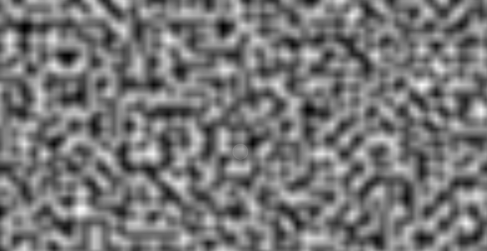

Unity2D
Movement Scipt
// Update is called once per frame
void Update(){
float moveSpeed = 10;
float horizontalInput = Input.GetAxis("Horizontal");
float verticalInput = Input.GetAxis("Vertical");
transform.Translate(new Vector3(horizontalInput, verticalInput, 0 ) * moveSpeed * Time.deltaTime);
}
Collision Detection
Objects must have collider component. Objects must have rigidbody for enabling physics engine controls. Refer RigidBody2D Manual.
OnCollisionEnter2D(Collider2D other){
if (other.gameObject.CompareTag("tag")){
Debug.Log("HIT tag");
}
}
Basic Perlin Noise

public static float[,] GenerateNoiseMap(int mapWidth, int mapHeight, float scale){
float[,] noiseMap = new float[,mapWidth,mapHeight];
if ( scale <= 0 ){ scale = 0.001F; }
for (int y = 0 ; y < mapHeight ; y++){
for (int x = 0 ; x < mapWidth ; x++){
float sampleX = x/scale;
float sampleY = y/scale;
float perlinValue = Mathf.PerlinNoise(sampleX,sampleY);
noiseMap[x,y] = perlinValue;
}
}
return noiseMap;
}
Better Perlin Noise : Octaves
Time
Time.deltaTime : The completion time in seconds since the last frame (Read Only).This property provides the time between the current and previous frame.
Last Updated: 19 May 2020